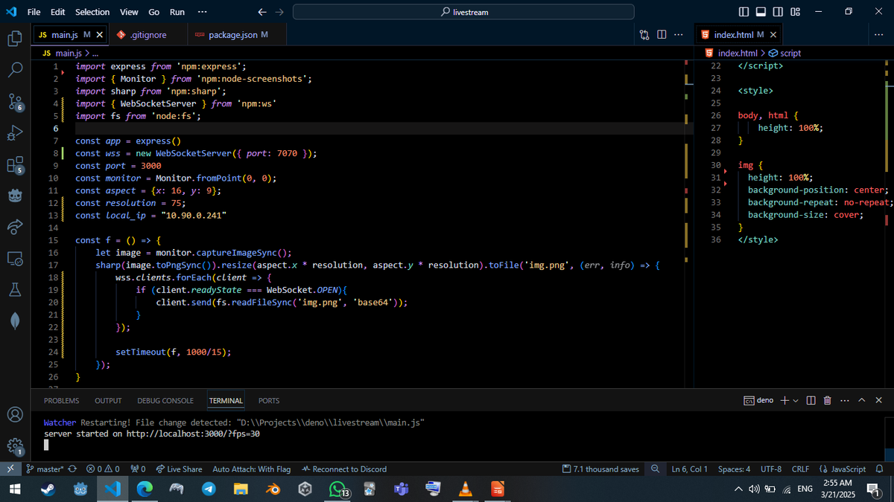

<script>
    const queryString = window.location.search;
    const urlParams = new URLSearchParams(queryString);
    const fps = parseInt(urlParams.get('fps'));
    const img = document.querySelector('img');
    
    const f = () => {
        img.src = 'img.png?random=' + performance.now();
        setTimeout(f, 1000/fps);
    };
    f();
</script>

<style>
   
body, html {
    height: 100%;
}

img {
  /* The image used */
  background-image: url("img_girl.jpg");

  /* Full height */
  height: 100%;

  /* Center and scale the image nicely */
  background-position: center;
  background-repeat: no-repeat;
  background-size: cover;
}
</style>